|
Åsögatan
Ur Stockholms gatunamn
Vid namnrevisionen 1885 gav man namnet Åsögatan åt
»Falkenbergsgatan och dess förlängningar åt vester
och öster samt den med den senare sammanfallande
Lilla Bondegatan». En andra »Falkenbergsgata» fanns
i Djurgårdsstaden. Åsöberget blev samtidigt namnet på
»parken ofvanför Tegelvikstorget». I Beredningsut-
skottets utlåtande 1884 nämns Åsögatan, med tilläg-
get »efter Södermalms gamla namn», bland exemplen
på kategorien »fosterländska och historiska namn».
|
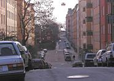
 2004. Åsögatan österut från Erstagatan 2004. Åsögatan österut från Erstagatan
|
|
Till gatan har före 1885 varit knutna olika namn.
Sträckan Östgötagatan-Nytorgsgatan kallas 1649
»Dagekarlsgathun».1 Att det finns ett samband mellan
detta namn och kvartersnamnet Dagakarlen, som är
belagt 1651 (Dagekarlen2), är uppenbart, men det är
inte möjligt att med säkerhet avgöra vilket namn som
är det primära, gatunamnet eller kvartersnamnet. År
1654 omtalas emellertid »Michel Larsons dagzwerks-
karls gårdztompt ... wthi quarteret Tegelslagaren
wedh Dagekarsgathun».3 Man kan därför inte helt
utesluta möjligheten, att det är denne »dagzwerks-
karl» som har gett anledning till gatunamnet, som i så
fall bör vara äldre än kvartersnamnet.
|
|
Under 1670-talet försvinner namnet Dagakarlsgatan till förmån för Sillpackargatan; det yngsta belägget
synes vara från 1674 och återfinnes i Holms tomtbok. I den kallas gatan för »Dagekarls Gatan Item /även/
Sillpakkare gatan».
Namnet Sillpackargatan är belagt 1669. Anledningen till namnet har varit, att det har bott sillpackare vid
gatan. I Holms tomtbok 1674 omtalas sålunda såsom tomtägare i kvarteren Höken, Timmermannen och
Dagakarlen vid Sillpackargatan »Sahl. Simon Hindrichsson Sillpakkare», »S: Thomas Hindersson Sillpachare» och
»Swän Sillpachare». Sillpakkare var en av staden anställd person som hade till uppgift att besiktiga och
(om)packa sill, som infördes till staden eller utskeppades därifrån. Fram mot mitten av 1800-talet blir
Sillpackargatan det gängse namnet på gatan väster om nuvarande Östgötagatan men ersättes därefter av Falkenbergsgatan. Detta namn är belagt 1665 (Falckenbärgzgatun).
|
|
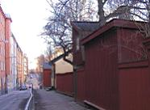
2004. Åsögatan västerut mot Erstagatan. Första gatan till vänster är Ploggatan. Närmast till höger nr 207. Det gula stenhuset är nr 203 (tidigare 147)
|
Anledningen till namnet har varit, att riksrådet Conrad von Falkenberg (1591-1654) varit
tomtägare i kvarteret Oron; år 1666 omtalas »Falkenbärgz Tompt» och 1667 »Sahl. wälb. H:r Conrad
von Falchenbergz arfwingars gårdh». I Holms tomtbok 1674 betecknas gatan vid kvarteren Oron och
Tegelslagaren såsom »Falkenbergz Gatan eller Sillpackare gatan»." Namnet Falkenbergsgatan kommer efterhand
att avse gatusträckningen öster om Östgötagatan; efter 1857 gäller namnet även för sträckningen väster
om Östgötagatan.
Falkenbergsgatan slutade vid bergen öster om nuvarande Borgmästargatan. Den del av nuvarande
Åsögatan som låg öster om bergen kallades Lilla Bondegatan (1760-talet).
NB föreslog 1940 namnet Åsötorget med motiveringen att »det är kort samt lätt att uttala och framför allt
hugfäster det den nuvarande stadsdelen Södermalms ursprungliga namn Åsön». Andra namn som hade
diskuterats i sammanhanget var Fatburstorget, Katarinaplatsen och Bondetorget.
Åsögatan 195
(Tidigare 141)
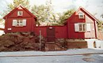
|
|
De båda husen på tomten tillkom troligen strax efter 1712 resp. strax före 1736. Byggnadskropparna förnyades helt 1959-60.
Åsögatan 195, kan följas i tomtöres- och mantalslängder
tillbaka till 1690-talet och var då nyss uppbyggd. I stadsingenjör Johan Cortmans tomtbok från sekelskiftet 1700 tillhör den timmerkarlen Anders Persson,
"är allenast en stuga", och 1711 ägs den av skeppstimmerkarlen Måns Månsson och har blott en
eldstad. Senare ägdes gården av ytterligare en timmerkarl och såldes av hans änka till en
kofferdisjöman, tillföll senare dennes änka och såldes på auktion 1777.
|
Under denna tid var gården
bostad för ägarfamiljen och 2-3 hushåll som fick sitt uppehälle på varvet eller i någon
klädesmanufaktur, samt några ensamstående textilarbeterskor och åldringar.
|
1770 flyttade varvstimmermannen Peter Hagman in i gården med sin familj. 1771 dog en son i
kopporna, 5½ år gammal, 1772 först hustrun och sedan han själv, båda i hetsig feber. Den 14-åriga
dottern Anna Stina fick då plats som barnflicka i Gamla Stan, blev sedan figurantska vid Operan
och småningom älskarinna åt Gustav III:s bror hertig Fredrik, varvid det folkliga namnet Anna
Stina byttes ut mot det mer välklingande Sophie. Hennes vidare öden utspelades fjärran från denna
trakt.
1777 köpte estoftfabrikören Carl Magnus Schön
Meyer gården; han använde den som bostad för en del av arbetsstyrkan i sin närbelägna fabrik, där
man framställde finare ylletyger. 1780 bodde här sålunda en tysk tygvävargesäll med hustru och son
samt sex lärgossar 11-20 år gamla.
|
|
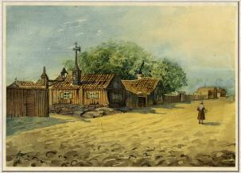
|
|
1785 köps gården av en skeppstimmerman, som skiftar yrke till
tjärkullrare (han rullar tjärtunnor) och avancerar till tjärvräkare som kontrollerar tjärans kvalitet.
Under 1800-talet ägs gården av varvstimmermän fram till 1861, då den köps av en undermaskinist.
Från 1 april 1881 är Stockholms stad ägare; detta var den första egendom i kvarteret som staden
förvärvade.
1870 bebos gården av ägaren och hans familj samt två timmermansfamiljer och två
ensamstående
timmermän. Husägare inom området är främst arbetare av olika slag, somliga anställda vid varvet,
men också handlande, ensamstående kvinnor och sterbhus. En tredjedel av ägarna bor inte i sina hus,
utan är skrivna i mer välmående delar av Södermalm, i Gamla Stan, på Östermalm eller på
Djurgården.
|
|
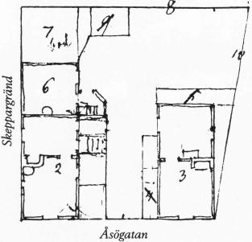
|
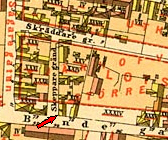
|
|
När staden övertog gården, var den uppdelad i tre lägenheter, som hade årshyran 200, 180 och 130
kronor, och varje lägenhet rymde en barnfamilj och en eller flera inneboende. Normalinkomsten för
de arbetare som hyrde var 700-800 kronor per år. Med tiden sänktes hyrorna och höjdes lönerna. 1920
var hyrorna 160, 160 och 120 kronor, och dessa lägenheter bebos av en skeppstimmerman vid flottan
och hans hustru, inkomst 5 090 kronor, en körkarl med hustru och egen häst samt en inneboende tryckeriarbeterska,
inkomst 3 800 resp 1 500 kronor, och en murare med hustru, vilka har
fattigunderstöd och inkomst 2 000 kronor och en inneboende diversearbetare med årsinkomsten 3 800
kronor.
|
|
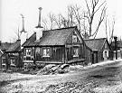
1902
|
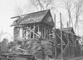
1960 under renovering
|
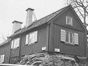
1963 efter renovering
|
|
Inneboendesystemet, som kan vara svårt att skilja från "stockholmsäktenskap", lever kvar länge här,
men med tiden blir barnen färre och befolkningen i övrigt fåtaligare och äldre. En och annan
studerande flyttar in, och åtskilliga lägenheter förlorar sin bostadsfunktion. "Så snart ett bostadshus
blir ledigt här döms det ut som bostad och en verkstad flyttar in", heter det i en tidningsintervju 1952.
|
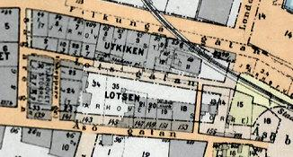
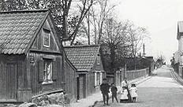
Åsögatan österut från Skeppargränd. Närmast
till vänster nr 141 och därefter 143.
|
|
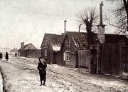
Åsögatan 139-143 västerut. 143 närmast till höger. Mellan 139 och 141 börjar Skeppargränd.
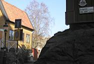
2004. Hörnet Åsögatan/Skeppargränd från sydost.
|
|
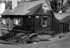
Åsögatan 141/Skeppar-
gränd 5 från väster.
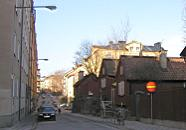
2004. Åsögatan 195 från öster
|
|
1953 bor i Åsögatan 195 en försäljare och hans hustru, en lägenhet är hobbylokal och en är bleckslageri. 1955
finns här blott försäljaren och hans hustru samt en inneboende kock, som snart flyttar därifrån. De
sista åren bor hustrun ensam kvar.
Åsögatan 198
Tidigare 96
Typ av mindre Malmgård från 1600-1700-tal, också kallad Fyrkanten och Hagen.
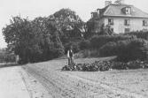
1907
|
|
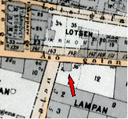
|
|
|
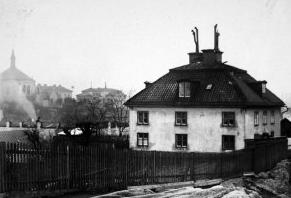
1900
|
Denna byggnad bör vara identisk med den som beskrivs i samband med den Tottieska malmgården i Sjutton Skansenhus berättar, Arne Biörnstad:
|
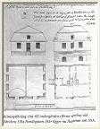
|
|
Hur området såg ut 1759 kan vi inte veta med säkerhet, men det finns en osignerad ritning som måste vara
gjord efter 1766, då tjärkullraren Anders Appelroth
byggde sig det hus som syns på den lilla nordliga
granntomten. Ritningen visar hela Barnängsbacken med
ett rätvinkligt system av gångar och odlingsytor, inde-
lade i en mängd sängar eller rabatter. Tyvärr finns inte
någon text som förklarar vad som är verklighet och vad
som är vision i den. För det är tydligt att den är gjord
medan både byggande och planering pågick.
|
|
På norrsidan, väster om Appelroths tomt, ligger ett
litet kvadratiskt hus, det första som Charles Tottie lät
bygga. Ritningen till det godkändes 1763 av Stockholms
stads Ämbets- och Byggnings Collegium. Ett envånings stenhus med två stora välvda källare »till grön-
sakers och rotsakers förvarande«. Den ena källaren
hade en kakelugn som kunde värma båda valven.
|
|
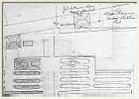
|
Redan 1733, då Tillaeus' karta tillkom tycks det ha funnits en byggnad på samma plats.
|
|
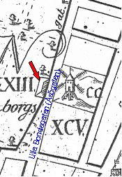
Tillaeus' karta
|
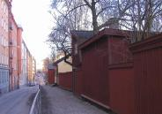
2004. Åsögatan mot väster från nr 207.
|
|
|
|
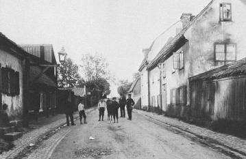
Åsögatan mot öster från nr 147, nu 203, (till vänster) och 100 (till höger). Ägare till nr 100 i kv Barnängsbacken 2 och 3 var Stockholms fattigvårdsnämnd.
|
|
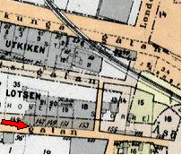
|
Åsögatan 202-204
Tidigare 100-102
Bilden är tagen från sydost 1902.
På denna sida - den södra - av Åsögatan finns idag endast höga hyreshus.
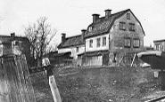
1906
|
|
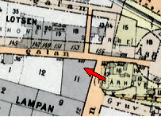
|
|
|
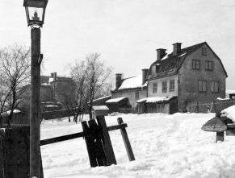
1902
|
|
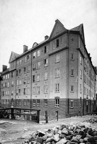
Arbetarbostadsfondens hus,
Åsögatan 102 (nu 204) /Duvnäsgatan 8
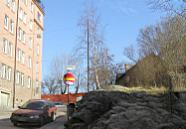
2004. Duvnäsgatan norrut mot Åsögatan. Till vänster Duvnäsgatan 8.
|
|
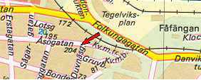
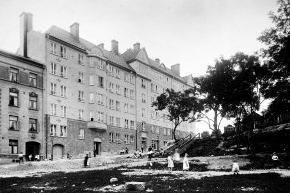
Duvnäsgatan 8-12. År 1913.
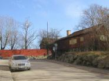
2004. Duvnäsgatan norrut mot Åsögatan. Till höger Åsögatan 206 och där bakom skymtar nr 213.
|
|
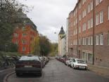
Duvnäsgatan från Åsögatan söderut mot Bondegatan. 2002
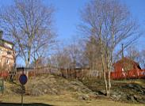
2004. Från Gruvbacken norrut mot Åsögatan 208. Till vänster fastigheten vid hörnet Duvnäsgatan/Åsögatan.
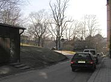
2004. Gruvbacken österut.
|
I fastigheten Åsögatan 108 var 1906 mantalsskrivna:
Skomakaränkan Tekla Konkordia Lindahl (f 1841).
Äger fastigheten.
Bokföraränkan Edla Malvina Österberg
(f 1839).
Årshyra 120 kronor.
Arbetskarlen Per Erik Jansson (skriven
på Duvnäsgatan 16)
hyr materialbod i
fastigheten för en årshyra av 25 kronor.
|
|
|
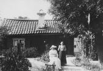
På gården till Åsögatan 108, numera 206. Ägare skomakaränkan T C Lindahl. Foto 21 augusti 1906
|
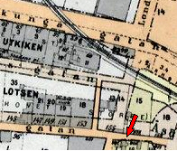
|
Åsögatan 217
(Tidigare 161)
Trapporna från Åsöberget ned till Kvastmakaregatan.
I bakgrunden Fåfängan. 1924
|
|
2004
|
|
|
|